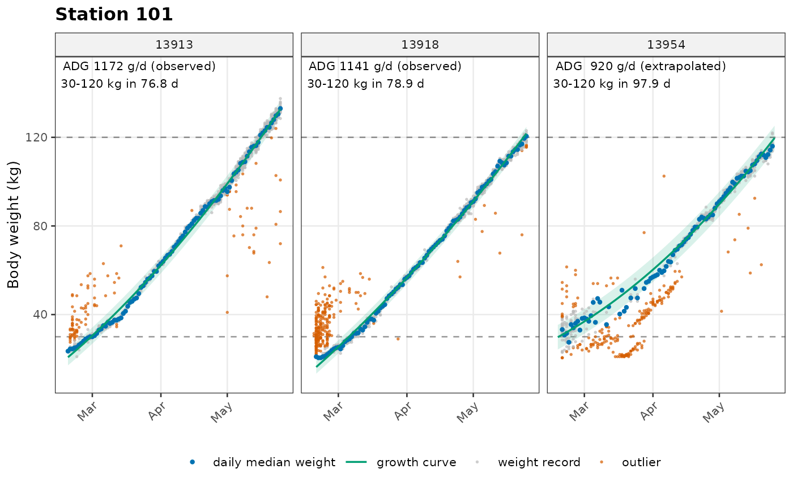
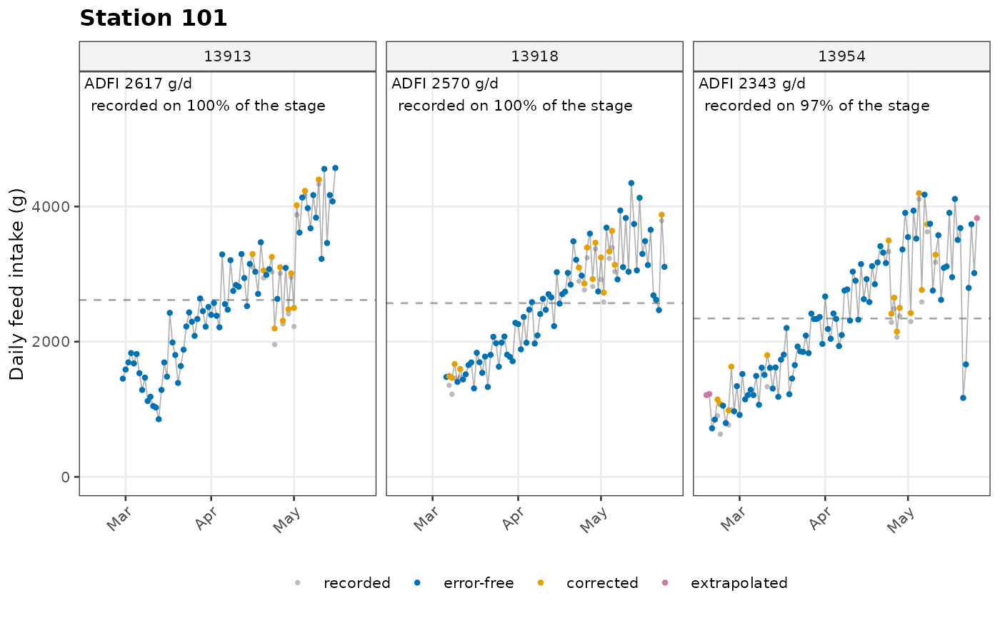

Plot body weight and the fitted growth curve of each pig, one plot per station.
Arguments
- adg
Result of
calc_adg().- weight
Optional result of
clean_weight()to also show every weight record, with outliers highlighted.- responders, locations
Optional pig IDs and stations to plot.
- ncol
Number of panel columns. Default 3.
- verbose
0 (silent), 1 (summary, default).
Value
A data.table with one row per station: location, n_pigs
and plot (a list of ggplot objects). Use save_plots() to write them
to files.
Examples
visits <- prep_visits(nedap, verbose = 0)
w <- clean_weight(visits, verbose = 0)
adg <- calc_adg(w, verbose = 0)
adfi <- calc_adfi(visits, adg, verbose = 0)
g <- plot_adg(adg, weight = w, locations = "101", responders = c("13913", "13918", "13954"))
#> ✔ Created 1 growth plot
g$plot[[1]]

f <- plot_adfi(adfi, responders = c("13913", "13918", "13954"))
#> ✔ Created 1 feed intake plot
f$plot[[1]]

out <- save_plots(g, path = tempdir(), prefix = "loc", suffix = "growth", device = "pdf")
#> ✔ Saved 1 of 1 plot to /tmp/Rtmp8zahNH
file.exists(out$file)
#> [1] TRUE
unlink(out$file)